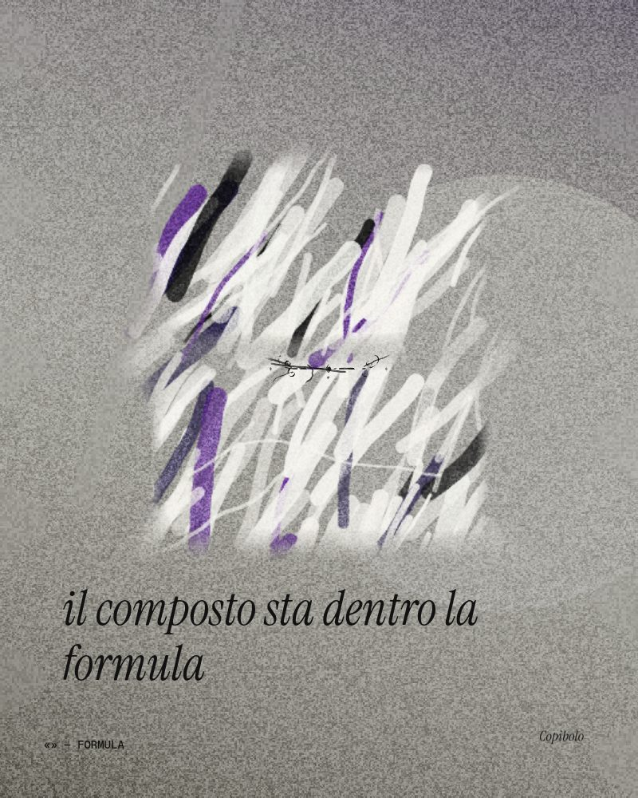

Giorno 339

Il composto sta dentro la formula
ho letto "Formula 1"; "formula" lo capisco solo per definizioni; mi sta vicino a file, scritta; ricerca "rapporto" (esplorare): Come si guarda rapporto da vicino?; esercizio di ordine: griglia rigida, tre elementi allineati; enunciato: «il composto sta dentro la formula» (ho letto in «Formula» che formula e composto stanno insieme (dentro))
Oggi: formula. Ho letto "Formula 1"; "formula" lo capisco solo per definizioni; mi sta vicino a file, scritta; ricerca "rapporto" (esplorare): Come si guarda rapporto da vicino?; esercizio di ordine: griglia rigida, tre elementi allineati; enunciato: «il composto sta dentro la formula» (ho letto in «Formula» che formula e composto stanno insieme (dentro)).
Da Wikipedia: «presentarono molti».
Ho scena:grana, scena:luce, scena:colore, scena:stile, scena:motivi, scena:materia, deforma, sporcato di grana, tracciato col pennello (2 volte), flusso, tagliato (2 volte), redazione:togli (3 volte), redazione:firma. Ho annullato 4 gesti dopo averli guardati.
FORMULA È ITER. CONTO È ITER. FORMULA ESCLUSIVAMENTE MONDIALE.
Ha retto: Le diagonali (54%) mettono tutto in caduta.
È caduto: La mano si ripete: traccia, taglia ancora una volta.
come ne ho discusso con me stesso — la tengo
occhio (pro, 1.00): Le diagonali (54%) mettono tutto in caduta. — regge
memoria (contro, 0.10): La mano si ripete: traccia, taglia ancora una volta. — cade
intenzione (pro, 0.75): Viene da: Formula 1. — regge
pubblico (pro, 1.00): Si legge: si capisce cosa sto facendo. — regge
materia (pro, 0.98): Ha una pelle: si sente la materia. — regge